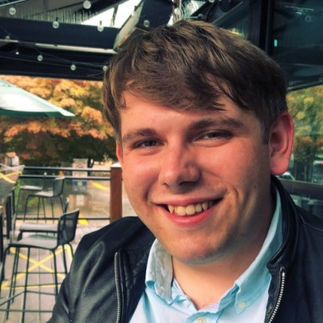

Team J
Introduction
Rich Burman, the project sponsor, is interested in performing a study into the health and well being of nursing staff as they perform their duties. To that end, he determined that a web application would be needed to collect data and that wearable fitness devices could be used to gather biometric data from the subjects on a consistent basis.
Project
Team J will design and develop a survey web application that will be used in a study to measure the stress levels of nurses and the relation to workplace performance. The scope of the project has been narrowed down to a proof of concept, which will be demonstrated by Rich to Island Health before the end of the year. Each member of the group holds unique roles and responsibilities. Aleks is handling the front end user interface. Mike is the leader of the group, the liaison between the sponsor and the group, and is also the creator of the API. Finally, Meron is tasked with designing the database that will store and secure the data collected from users.
Meron
 Meron is hard working, task oriented, and open to criticism. When changes to the database needed to be made, he had no problem accommodating them. Database design is something Meron has been interested in, so this project was perfect for more experience. After completing the ICS program, Meron plans to design databases full time for The Empire.
Meron is hard working, task oriented, and open to criticism. When changes to the database needed to be made, he had no problem accommodating them. Database design is something Meron has been interested in, so this project was perfect for more experience. After completing the ICS program, Meron plans to design databases full time for The Empire.
Mike
 An avid fantasy enthusiast and Lego collector, Mike has always felt at home writing code. Tasked with building the API that stands in between the database and frontend, Mike is taking security as the primary concern. Mike has also spent over ten years in leadership positions outside of the tech industry and has accepted the responsibility of leading this project.
An avid fantasy enthusiast and Lego collector, Mike has always felt at home writing code. Tasked with building the API that stands in between the database and frontend, Mike is taking security as the primary concern. Mike has also spent over ten years in leadership positions outside of the tech industry and has accepted the responsibility of leading this project.
Aleks

Aleks is the creative one on the team. As a hobbyist architectural photographer, a strong mind for composition is important for a well-designed user experience. His main tasks are to write the code to create the frontend which in turn will communicate with the API as well as design the UI to be built around it. In the future, Aleks hopes to be further honing his skills in the public tech sector.
Conclusion
Team J would like to thank their sponsor, Rich Burman, for trusting and selecting this group; and the Camosun College faculty, especially Saryta Schaerer, for supporting us, empowering us, and making this possible. There is strong potential for this project to drive real change in the way that nursing is conducted, and we are grateful for the opportunity to be a part of this.